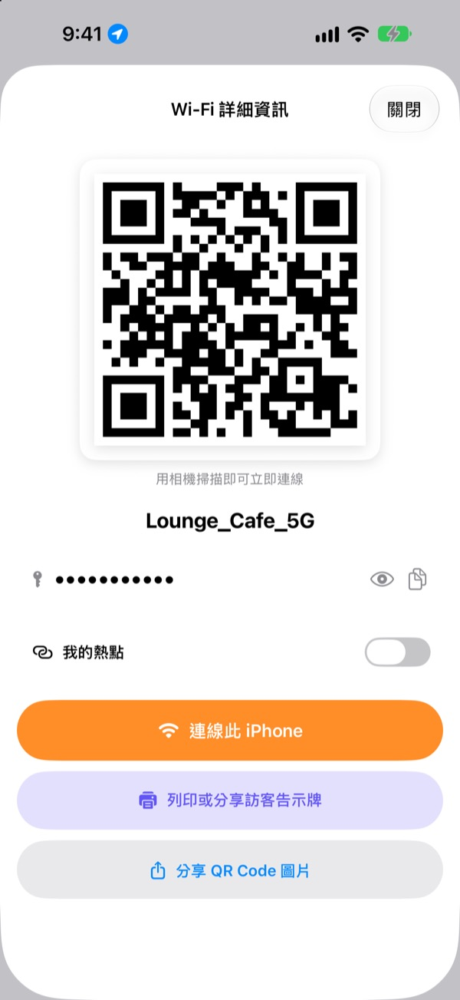
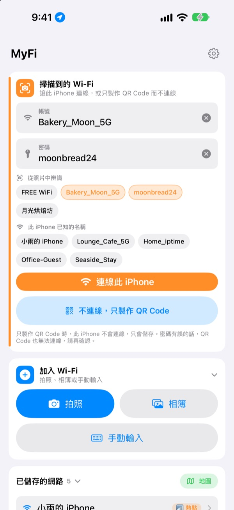
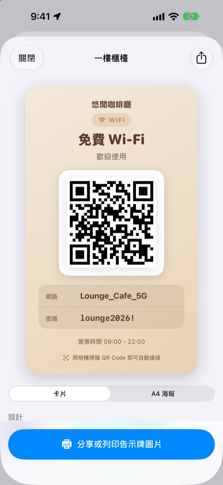
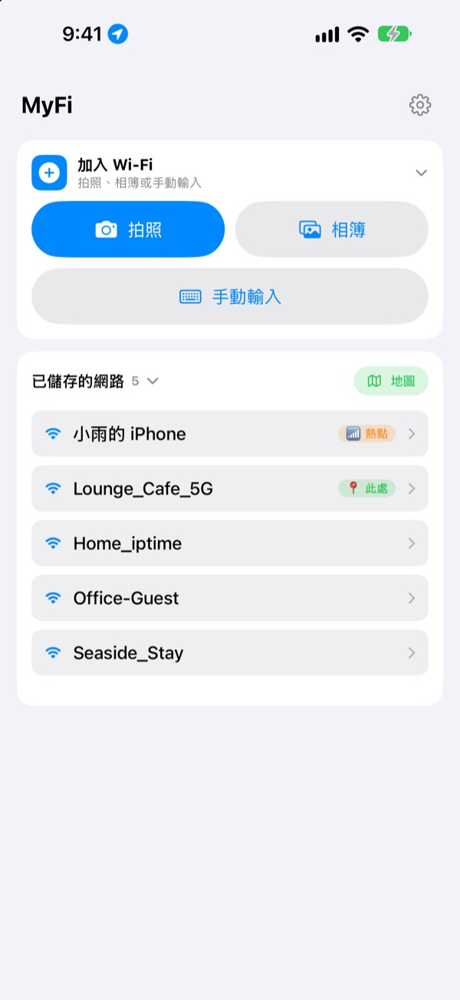

不用再唸密碼，
一張 QR Code 就夠了
朋友用相機掃一下就連上了。咖啡廳牆上的告示牌，拍一張照片這支 iPhone 就能連線。再也不會因為抄錯而連不上。
所有功能都免費。支援 iOS 17 以上的 iPhone。

做一張你的 Wi-Fi QR Code
改一下名稱或密碼，告示牌馬上跟著變。用手機相機掃一下，真的會跳出加入網路的提示。
「Wi-Fi 密碼是多少？」今天被問了幾次？
唸給客人聽，大小寫說錯；照著牆上的告示抄，0 和 O 分不清；然後再解釋一遍。MyFi 把這些麻煩變成一張照片和一張 QR Code。
拍一下就連上
拍下牆上的 Wi-Fi 告示牌或收據，或從相簿選一張，它會讀出網路名稱和密碼，直接讓這支 iPhone 連線。告示牌上如果有 QR Code，會先讀 QR Code，結果更準確。
文字沒認清時，把從照片擷取的片段拖到名稱或密碼欄就好。

製作並列印訪客告示牌
從7種主題中選一種，加上店名、標誌和營業時間等文字。可選卡片或 A4 直式海報，存成圖片，或用 AirPrint 直接列印。
每家店、每張桌子都能做不同的告示牌，隨時修改。

回到老地方，它排在最前面
連線過或分享過的 Wi-Fi 會連同當時的位置一起儲存。回到同一個地方，那裡的 Wi-Fi 會排在最上面，儲存過的地點也能在地圖上看。
常用的 Wi-Fi 可以做成 QR Code 放在主畫面或鎖定畫面小工具上，客人問起時亮出螢幕就好。

三個步驟就能開始
- 1
打開 App
為了辨識目前連線的 Wi-Fi 名稱，第一次會請求一次位置權限。
- 2
拍照或輸入
拍下告示牌，或輸入一次自己的 Wi-Fi 密碼。
- 3
連線或出示
讓這支 iPhone 連線，或打開 QR Code 給對方的相機掃，就完成了。
在哪裡操作
- 用告示牌照片連線
加入 Wi-Fi裡選拍照或相簿，再點連線此 iPhone- 手動輸入後連線
加入 Wi-Fi裡選手動輸入- 不連線，只做 QR Code
不連線，只製作 QR Code- 用訊息傳送 QR Code
- 點一個已儲存的網路，再點
分享 QR Code 圖片 - 訪客告示牌
- 點一個已儲存的網路，再點
列印或分享訪客告示牌 - 把熱點做成 QR Code
- 點一個已儲存的網路，打開
我的熱點 - 快速連線或分享
- 在列表中向右滑是連線，向左滑是分享 QR Code
- 查看儲存過的地點
已儲存的網路旁的地圖- 把 QR Code 放在主畫面
- 長按主畫面，加入 MyFi 的
Wi-Fi QR Code小工具
也可以用 Siri 或捷徑直接打開 QR Code。
所有功能都免費
免費
- 用照片連線 Wi-Fi
- 製作 QR Code 並以圖片分享
- 訪客告示牌：7種主題、卡片和 A4 海報、AirPrint 列印
- 主畫面和鎖定畫面小工具
- 已儲存 Wi-Fi 的地圖
- 沒有廣告，不用註冊
贊助支持（自由選擇）
- 喜歡的話，可以贊助小費支持開發
- 小費不會解鎖任何功能，不付也能用全部功能
小費是一次性的小額付款。
沒有訂閱，也沒有付費功能。
常見問題
為什麼要自己輸入密碼？
基於 iOS 的安全規定，任何 App 都讀不到裝置裡儲存的 Wi-Fi 密碼。所以名稱會自動辨識，密碼只需第一次輸入，之後就用儲存的值。
看不到目前連線的 Wi-Fi 名稱。
iOS 只會把 Wi-Fi 名稱告訴有位置權限的 App。請到設定 › 隱私權與安全性 › 定位服務允許 MyFi。位置只用來辨識 Wi-Fi 名稱和認出你回到過的地方。
照片裡的名稱或密碼辨識錯了。
靠近一點、拍正一點會比較好辨識。還是不對的話，把照片擷取的片段拖到正確的欄位，或直接修改。告示牌上有 Wi-Fi QR Code 時，會讀 QR Code 準確填入。
能辨識什麼樣的告示牌？
最擅長以英文或韓文標示的告示牌，例如 ID、PW、SSID、Network、Password。沒有標示時，也會挑出看起來像密碼的那一行。告示牌上的 Wi-Fi QR Code 不論什麼語言都能準確讀取。
收到 QR Code 的人要怎麼連線？
不論 iPhone 或 Android，用內建相機掃 QR Code 就會跳出加入網路的提示，不需要安裝任何 App。
別人看得到我的密碼嗎？
QR Code 裡是標準的 Wi-Fi 連線資訊。要不要分享一律由你決定，告示牌上也可以隱藏密碼。
為什麼連不上自己的熱點？
iPhone 的個人熱點就是這支手機本身，沒辦法連線到自己。打開 我的熱點 後，MyFi 會把它當成分享給別人的 QR Code 來處理。
我的 Wi-Fi 資訊會傳到哪裡？
MyFi 沒有伺服器。Wi-Fi 名稱和密碼、照片辨識結果、位置都只在裝置裡處理和儲存。不使用廣告和追蹤工具，只會把用來改進 App 的匿名使用統計和錯誤報告傳到 Apple iCloud。
支援哪些裝置？
iOS 17 以上的 iPhone。App 提供24種語言。
有問題或建議，請寄信到 leeo@kakao.com。通常2到3天內回覆。